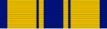

Air and Space Commendation Medal
DecorationFormerly the Air Force Commendation Medal · AFCM
For meritorious achievement and service while serving with the Air Force.
Check your eligibility and build your ribbon rackHow you get it
A decoration must be officially awarded. Meeting the standard isn't enough: someone has to recommend you and the approval authority has to sign off. The citation and special order are your proof.
Approval: Approved at the level set in DAFMAN 36-2806, Military Awards: Criteria and Procedures.
It belongs on your record if
- You received it: a citation and special order were issued to you, or it's on your DD-214 or personnel record
- It was approved, but it's missing from your DD-214 or personnel record
What it's awarded for
- Distinguished yourself by meritorious achievement or service while serving with the Air Force after March 24, 1958
- Performed an act of courage not involving the voluntary risk of life required for the Airman's Medal
Devices
- Valor "V" device: Your citation or special order shows the award included the V (awarded for an act of heroism in direct combat, with personal exposure to hostile action)
- Combat "C" device: Your citation or special order shows the award included the C (awarded for service or achievement under combat conditions while personally exposed to hostile action on or after Jan. 7, 2016)
- Remote "R" device: Your citation or special order shows the award included the R (awarded for hands-on weapon-system employment with direct, immediate impact on a combat operation, without exposure to hostile action; RPA, cyber, space, or ISR fields, on or after Jan. 7, 2016)
Quick facts
- Category
- Personal decorations
- Type
- Decoration
- Authorized devices
- Oak Leaf Cluster, Combat “C”, Remote “R” and Valor “V” Devices
- WAPS points
- 3
- Position in the AFPC listing
- 17 of 91 (listed in order of precedence)
Full AFPC fact sheet text
Background
This medal was authorized by the Secretary of the Air Force on March 28, 1958, for award to members of the armed forces of the United States who, while serving in any capacity with the Air Force after March 24, 1958, shall have distinguished themselves by meritorious achievement and service. The degree of merit must be distinctive, though it need not be unique. Acts of courage which do not involve the voluntary risk of life required for the Soldier's Medal (or the Airman's Medal now authorized for the Air Force) may be considered for the Air Force Commendation Medal.
Medal description
The medal (pictured above) is a bronze hexagon, with one point up, centered upon which is the seal of the Air Force, an eagle with wings spread, facing left and perched upon a baton. There are clouds in the background. Below the seal is a shield bearing a pair of flyer's wings and a vertical baton with an eagle's claw at either end; behind the shield are eight lightning bolts.
Authorized devices
Oak Leaf Cluster, Combat “C”, Remote “R” and Valor “V” Devices
Eligibility criteria for combat “c” device
The "C" device was established to distinguish an award earned for exceptionally meritorious service or achievement performed under combat conditions on or after Jan. 7, 2016 (this is not retroactive prior to this date).
The device is only authorized if the service or achievement was performed while the service member was personally exposed to hostile action or under significant risk of hostile action:
- While engaged in action against an enemy of the United States
- While engaged in military operations involving conflict with an opposing foreign force; or
- While serving with friendly foreign forces engaged in an armed conflict against an opposing armed force in which the United States is not a belligerent party
The use of the "C" device is determined solely on the specific circumstances under which the service or achievement was performed. The award is not determined by geographic location. The fact the service was performed in a combat zone, a combat zone tax exclusion area, or an area designated for imminent danger pay, hardship duty pay, or hostile fire pay is not sufficient to qualify for the "C" device. The service member must have been personally exposed to hostile action or under significant risk of hostile action.
Rank/Grade will not be a factor in determining whether the "C" device is warranted, nor will any quotas, official or unofficial, be established limiting the number of "C" devices authorized for a given combat engagement, a given operation, or cumulatively within a given expanse of area or time.
Eligibility criteria for remote “r” device
The "R" device was established to distinguish an award earned for direct hands-on employment of a weapon system that had a direct and immediate impact on a combat operation or other military operation (i.e. outcome of an engagement or specific effects on a target). Other military operations include Title 10, United States Code, support of non-Title 10 operations, and operations authorized by an approved execute order.
The action must have been performed through any domain and in circumstances that did not expose the individual to personal hostile action, or place him or her at significant risk of personal exposure to hostile action:
- While engaged in military operations against an enemy of the United States; or
- While engaged in military operations involving conflict against an opposing foreign force; or
- While serving with friendly foreign forces engaged in military operations with an opposing armed force in which the United States is not a belligerent party
Qualifying Career Fields
The "R" device may be awarded to Airmen who, during the period of the act, served in the remotely piloted aircraft; cyber; space; or Intelligence, Surveillance, and Reconnaissance career fields on or after Jan. 7, 2016 (this is not retroactive prior to this date).
Basis for a Decoration
- The "R" device is only authorized for a specific achievement (i.e. impact awards) and will not be authorized for sustained performance or service (i.e. end-of-tour, separation or retirement decorations)
- Recognition for direct and immediate impact shall be based on the merit of the individual's actions, the basic criteria of the decoration, and the "R" device criteria
- Performance of a normal duty or accumulation of minor acts will not justify the "R" device. The act must have been: performed in a manner significantly above that normally expected and sufficient to distinguish the individual above members performing similar acts
- A decoration should only be recommended in cases where the event clearly merits special recognition of the action (i.e. achieving a strategic objective or saving of lives on the ground)
Eligibility criteria for valor “v” device
The "V" device is worn on decorations to denote valor, an act or acts of heroism by an individual above what is normally expected while engaged in direct combat with an enemy of the United States, or an opposing foreign or armed force, with exposure to enemy hostilities and personal risk.
Effective Jan. 7, 2016, the “V” device is authorized on the Air Force Commendation Medal. As a reminder, the use of the "V" device on the Air Force Outstanding Unit Award and the Air Force Organizational Excellence Award is only authorized for the period of Jan. 11, 1996 to Jan. 1, 2014.
(NOTE: The establishment of the Gallant Unit Citation and Meritorious Unit Award warranted the discontinuance of the "V" device being authorized for approved USAF unit awards).
Source: Air and Space Commendation Medal fact sheet, Air Force's Personnel Center